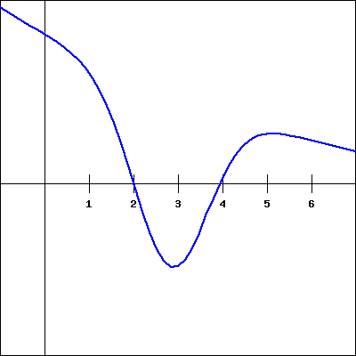
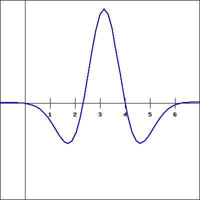
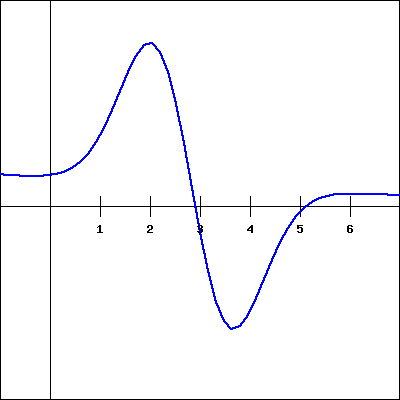

How does the limit definition of the derivative of a function \(f\) lead to an entirely new (but related) function \(f'\text{?}\)
What is the difference between writing \(f'(a)\) and \(f'(x)\text{?}\)
How is the graph of the derivative function \(f'(x)\) related to the graph of \(f(x)\text{?}\)
What are some examples of functions \(f\) for which \(f'\) is not defined at one or more points?
We now know that the instantaneous rate of change of a function \(f(x)\) at \(x = a\text{,}\) or equivalently the slope of the tangent line to the graph of \(y = f(x)\) at \(x = a\text{,}\) is given by the value \(f'(a)\text{.}\) In all of our examples so far, we have identified a particular value of \(a\) as our point of interest: \(a = 1\text{,}\)\(a = 3\text{,}\) etc. But it is not hard to imagine that we will often be interested in the derivative value for more than just one \(a\)-value, and possibly for many of them. In this section, we explore how we can move from computing the derivative at a single point to computing a formula for \(f'(a)\) at any point \(a\text{.}\) Indeed, the process of “taking the derivative” generates a new function, denoted by \(f'(x)\text{,}\) derived from the original function \(f(x)\text{.}\)
Preview Activity1.4.1.
Consider the function \(f(x) = 4x - x^2\text{.}\)
Use the limit definition to compute the derivative values: \(f'(0)\text{,}\)\(f'(1)\text{,}\)\(f'(2)\text{,}\) and \(f'(3)\text{.}\)
Observe that the work to find \(f'(a)\) is the same, regardless of the value of \(a\text{.}\) Based on your work in (a), what do you conjecture is the value of \(f'(4)\text{?}\) How about \(f'(5)\text{?}\) (Note: you should not use the limit definition of the derivative to find either value.)
Conjecture a formula for \(f'(a)\) that depends only on the value \(a\text{.}\) That is, in the same way that we have a formula for \(f(x)\) (recall \(f(x) = 4x - x^2\)), see if you can use your work above to guess a formula for \(f'(a)\) in terms of \(a\text{.}\)
Subsection1.4.1How the derivative is itself a function
In your work in Preview Activity 1.4.1 with \(f(x) = 4x - x^2\text{,}\) you may have found several patterns. One comes from observing that \(f'(0) = 4\text{,}\)\(f'(1) = 2\text{,}\)\(f'(2) = 0\text{,}\) and \(f'(3) = -2\text{.}\) That sequence of values leads us naturally to conjecture that \(f'(4) = -4\) and \(f'(5) = -6\text{.}\) We also observe that the particular value of \(a\) has very little effect on the process of computing the value of the derivative through the limit definition. To see this more clearly, we compute \(f'(a)\text{,}\) where \(a\) represents a number to be named later. Following the now standard process of using the limit definition of the derivative,
Here we observe that neither \(4\) nor \(2a\) depend on the value of \(h\text{,}\) so as \(h \to 0\text{,}\)\((4 - 2a - h) \to (4 - 2a)\text{.}\) Thus, \(f'(a) = 4 - 2a\text{.}\)
This result is consistent with the specific values we found above: e.g., \(f'(3) = 4 - 2(3) = -2\text{.}\) And indeed, our work confirms that the value of \(a\) has almost no bearing on the process of computing the derivative. We note further that the letter being used is immaterial: whether we call it \(a\text{,}\)\(x\text{,}\) or anything else, the derivative at a given value is simply given by “4 minus 2 times the value.” We choose to use \(x\) for consistency with the original function given by \(y = f(x)\text{,}\) as well as for the purpose of graphing the derivative function. For the function \(f(x) = 4x - x^2\text{,}\) it follows that \(f'(x) = 4 - 2x\text{.}\)
Because the value of the derivative function is linked to the graph of the original function, it makes sense to look at both of these functions plotted on the same domain.
Figure1.4.1.The graphs of \(f(x) = 4x - x^2\) (at left) and \(f'(x) = 4 - 2x\) (at right). Slopes on the graph of \(f\) correspond to heights on the graph of \(f'\text{.}\)
In Figure 1.4.1, on the left we show a plot of \(f(x) = 4x - x^2\) together with a selection of tangent lines at the points we've considered above. On the right, we show a plot of \(f'(x) = 4 - 2x\) with emphasis on the heights of the derivative graph at the same selection of points. Notice the connection between colors in the left and right graphs: the green tangent line on the original graph is tied to the green point on the right graph in the following way: the slope of the tangent line at a point on the lefthand graph is the same as the height at the corresponding point on the righthand graph. That is, at each respective value of \(x\text{,}\) the slope of the tangent line to the original function is the same as the height of the derivative function. Do note, however, that the units on the vertical axes are different: in the left graph, the vertical units are simply the output units of \(f\text{.}\) On the righthand graph of \(y = f'(x)\text{,}\) the units on the vertical axis are units of \(f\) per unit of \(x\text{.}\)
In Section 1.3 when we first defined the derivative, we wrote the definition in terms of a value \(a\) to find \(f'(a)\text{.}\) As we have seen above, the letter \(a\) is merely a placeholder, and it often makes more sense to use \(x\) instead. For the record, here we restate the definition of the derivative.
Definition1.4.2.
Let \(f\) be a function and \(x\) a value in the function's domain. We define the derivative of \(f\), a new function called \(f'\text{,}\) by the formula \(f'(x) = \lim_{h \to 0} \frac{f(x+h)-f(x)}{h}\text{,}\) provided this limit exists.
We now have two different ways of thinking about the derivative function:
given a graph of \(y = f(x)\text{,}\) how does this graph lead to the graph of the derivative function \(y = f'(x)\text{?}\) and
given a formula for \(y = f(x)\text{,}\) how does the limit definition of derivative generate a formula for \(y = f'(x)\text{?}\)
Both of these issues are explored in the following activities.
Activity1.4.2.
For each given graph of \(y = f(x)\text{,}\) sketch an approximate graph of its derivative function, \(y = f'(x)\text{,}\) on the axes immediately below. The scale of the grid for the graph of \(f\) is \(1 \times 1\text{;}\) assume the horizontal scale of the grid for the graph of \(f'\) is identical to that for \(f\text{.}\) If necessary, adjust and label the vertical scale on the axes for \(f'\text{.}\)
When you are finished with all 8 graphs, write several sentences that describe your overall process for sketching the graph of the derivative function, given the graph the original function. What are the values of the derivative function that you tend to identify first? What do you do thereafter? How do key traits of the graph of the derivative function exemplify properties of the graph of the original function?
Points where the slope of the tangent line is equal to zero are particularly important. Try finding these points first in your effort to plot \(y = f'(x)\) and plotting those zero values on the axes where you'll graph \(y = f'(x)\text{.}\)
For a dynamic investigation that allows you to experiment with graphing \(f'\) when given the graph of \(f\text{,}\) see this appled by Marc Renault 3 .
Now, recall the opening example of this section: we began with the function \(y = f(x) = 4x - x^2\) and used the limit definition of the derivative to show that \(f'(a) = 4 - 2a\text{,}\) or equivalently that \(f'(x) = 4 - 2x\text{.}\) We subsequently graphed the functions \(f\) and \(f'\) as shown in Figure 1.4.1. Following Activity 1.4.2, we now understand that we could have constructed a fairly accurate graph of \(f'(x)\)without knowing a formula for either \(f\) or \(f'\text{.}\) At the same time, it is useful to know a formula for the derivative function whenever it is possible to find one.
In the next activity, we further explore the more algebraic approach to finding \(f'(x)\text{:}\) given a formula for \(y = f(x)\text{,}\) the limit definition of the derivative will be used to develop a formula for \(f'(x)\text{.}\)
Activity1.4.3.
For each of the listed functions, determine a formula for the derivative function. For the first two, determine the formula for the derivative by thinking about the nature of the given function and its slope at various points; do not use the limit definition. For the latter four, use the limit definition. Pay careful attention to the function names and independent variables. It is important to be comfortable with using letters other than \(f\) and \(x\text{.}\) For example, given a function \(p(z)\text{,}\) we call its derivative \(p'(z)\text{.}\)
The limit definition of the derivative, \(f'(x) = \lim_{h \to 0} \frac{f(x+h)-f(x)}{h}\text{,}\) produces a value for each \(x\) at which the derivative is defined, and this leads to a new function \(y = f'(x)\text{.}\) It is especially important to note that taking the derivative is a process that starts with a given function (\(f\)) and produces a new, related function (\(f'\)).
There is essentially no difference between writing \(f'(a)\) (as we did regularly in Section 1.3) and writing \(f'(x)\text{.}\) In either case, the variable is just a placeholder that is used to define the rule for the derivative function.
Given the graph of a function \(y = f(x)\text{,}\) we can sketch an approximate graph of its derivative \(y = f'(x)\) by observing that heights on the derivative's graph correspond to slopes on the original function's graph.
In Activity 1.4.2, we encountered some functions that had sharp corners on their graphs, such as the shifted absolute value function. At such points, the derivative fails to exist, and we say that \(f\) is not differentiable there. For now, it suffices to understand this as a consequence of the jump that must occur in the derivative function at a sharp corner on the graph of the original function.
Exercises1.4.3Exercises
1.The derivative function graphically.
Consider the function \(f(x)\) shown in the graph below.
(Note that you can click on the graph to get a larger version of it, and that it may be useful to print that larger version to be able to work with it by hand.)
Carefully sketch the derivative function of the given function (you will want to estimate values on the derivative function at different \(x\) values as you do this). Use your derivative function graph to estimate the following values on the derivative function.
at \(x =\)
-3
-1
1
3
the derivative is
2.Applying the limit definition of the derivative.
Find a formula for the derivative of the function \(g(x) = 4x^{2}-8\) using difference quotients:
\(g'(x) = \lim\limits_{h\to0}\, [(\)\() / h]\)
\(\qquad =\) .
(In the first answer blank, fill in the numerator of the difference quotient you use to evaluate the derivative. In the second, fill out the derivative you obtain after completing the limit calculation.)
3.Sketching the derivative.
For the function \(f(x)\) shown in the graph below, sketch a graph of the derivative. You will then be picking which of the following is the correct derivative graph, but should be sure to first sketch the derivative yourself.
Which of the following graphs is the derivative of \(f(x)\text{?}\)
1
2
3
4
5
6
7
8
(Click on a graph to enlarge it.)
1.
2.
3.
4.
5.

6.
7.

8.

4.Comparing function and derivative values.
The graph of a function \(f\) is shown below.
At which of the labeled \(x\)-values is
\(f(x)\) least? \(x =\)
x1
x2
x3
x4
x5
x6
\(f(x)\) greatest? \(x =\)
x1
x2
x3
x4
x5
x6
\(f'(x)\) least? \(x =\)
x1
x2
x3
x4
x5
x6
\(f'(x)\) greatest? \(x =\)
x1
x2
x3
x4
x5
x6
5.Limit definition of the derivative for a rational function.
Let \(f\) be a function with the following properties: \(f\) is differentiable at every value of \(x\) (that is, \(f\) has a derivative at every point), \(f(-2) = 1\text{,}\) and \(f'(-2) = -2\text{,}\)\(f'(-1) = -1\text{,}\)\(f'(0) = 0\text{,}\)\(f'(1) = 1\text{,}\) and \(f'(2) = 2\text{.}\)
On the axes provided at left in Figure 1.4.3, sketch a possible graph of \(y = f(x)\text{.}\) Explain why your graph meets the stated criteria.
Conjecture a formula for the function \(y = f(x)\text{.}\) Use the limit definition of the derivative to determine the corresponding formula for \(y = f'(x)\text{.}\) Discuss both graphical and algebraic evidence for whether or not your conjecture is correct.
Figure1.4.3.Axes for plotting \(y = f(x)\) in (a) and \(y = f'(x)\) in (b).
7.
Consider the function \(g(x) = x^2 - x + 3\text{.}\)
Use the limit definition of the derivative to determine a formula for \(g'(x)\text{.}\)
Use a graphing utility to plot both \(y = g(x)\) and your result for \(y = g'(x)\text{;}\) does your formula for \(g'(x)\) generate the graph you expected?
Use the limit definition of the derivative to find a formula for \(p'(x)\) where \(p(x) = 5x^2 - 4x + 12\text{.}\)
Compare and contrast the formulas for \(g'(x)\) and \(p'(x)\) you have found. How do the constants 5, 4, 12, and 3 affect the results?
8.
Let \(g\) be a continuous function (that is, one with no jumps or holes in the graph) and suppose that a graph of \(y= g'(x)\) is given by the graph on the right in Figure 1.4.4.
Figure1.4.4.Axes for plotting \(y = g(x)\) and, at right, the graph of \(y = g'(x)\text{.}\)
Observe that for every value of \(x\) that satisfies \(0 \lt x \lt 2\text{,}\) the value of \(g'(x)\) is constant. What does this tell you about the behavior of the graph of \(y = g(x)\) on this interval?
On what intervals other than \(0 \lt x \lt 2\) do you expect \(y = g(x)\) to be a linear function? Why?
At which values of \(x\) is \(g'(x)\) not defined? What behavior does this lead you to expect to see in the graph of \(y=g(x)\text{?}\)
Suppose that \(g(0) = 1\text{.}\) On the axes provided at left in Figure 1.4.4, sketch an accurate graph of \(y = g(x)\text{.}\)
9.
For each graph that provides an original function \(y = f(x)\) in Figure 1.4.5, your task is to sketch an approximate graph of its derivative function, \(y = f'(x)\text{,}\) on the axes immediately below. View the scale of the grid for the graph of \(f\) as being \(1 \times 1\text{,}\) and assume the horizontal scale of the grid for the graph of \(f'\) is identical to that for \(f\text{.}\) If you need to adjust the vertical scale on the axes for the graph of \(f'\text{,}\) you should label that accordingly.
Figure1.4.5.Graphs of \(y = f(x)\) and grids for plotting the corresponding graph of \(y = f'(x)\text{.}\)